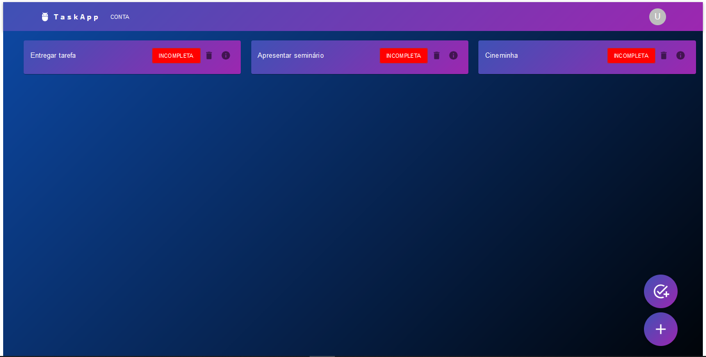
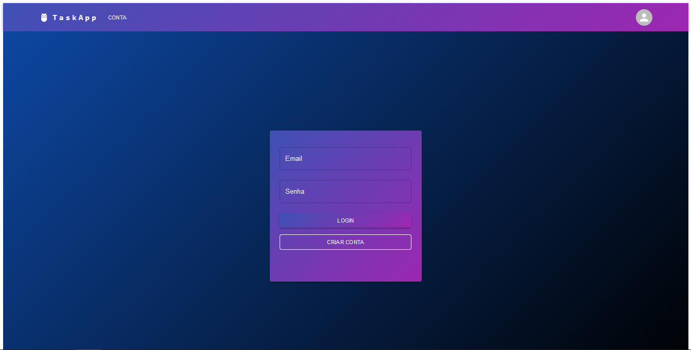

Task App
Esse foi um site completo feito após uma atividade avaliativa em que colaborei como desenvolvedor Back End e auxiliei na integração
O task app é um site de tarefas que lhe proporcionará a criação de suas tarefas diárias. Seja estudar ou fazer alguma atividade em casa, é possível registrar tudo nesse site.

Colaboradores:
Pedro Gabriel do Nascimento Matos (me)
Jhoão Pedro do Nascimento
Guilherme Silva Rios
Front-End: http://front-task-spi.vercel.app/
Back-End: https://deploy-task-api.onrender.com/
Link para o Git Hub: https://github.com/Guilhermeprog3/Front-Task